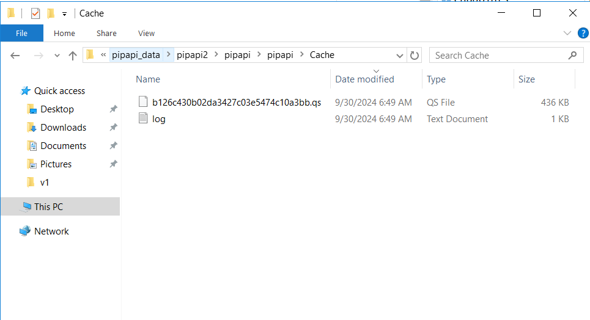

vignettes/debug-caching.Rmd
debug-caching.RmdIn pipapi package in file zzz.R we have
.onLoad function which looks like the following -
.onLoad <- function(libname, pkgname) {
if (Sys.getenv("PIPAPI_APPLY_CACHING") == "TRUE") {
d <- rappdirs::user_cache_dir("pipapi")
# log <- sprintf("%s/cache.log", d)
cd <- cachem::cache_disk(d,
read_fn = qs::qread,
write_fn = qs::qsave,
extension = ".qs",
evict = "lru",
logfile = NULL,
max_size = as.numeric(Sys.getenv("PIPAPI_CACHE_MAX_SIZE")),
prune_rate = 50)
pip <<- memoise::memoise(pip, cache = cd, omit_args = "lkup")
ui_hp_stacked <<- memoise::memoise(ui_hp_stacked, cache = cd, omit_args = "lkup")
pip_grp_logic <<- memoise::memoise(pip_grp_logic, cache = cd, omit_args = "lkup")
ui_cp_charts <<- memoise::memoise(ui_cp_charts, cache = cd, omit_args = "lkup")
ui_cp_download <<- memoise::memoise(ui_cp_download, cache = cd, omit_args = "lkup")
ui_cp_key_indicators <<- memoise::memoise(ui_cp_key_indicators, cache = cd, omit_args = "lkup")
assign("cd", cd, envir = .GlobalEnv)
packageStartupMessage("Info: Disk based caching is enabled.")
}
}What this means is that if this environment variable is set
Sys.getenv("PIPAPI_APPLY_CACHING") we create a caching file
which saves the result on our disk. This disk is your local computer if
you are working locally or server if the package is deployed there. This
caching file is generated at location d i.e
rappdirs::user_cache_dir("pipapi") in this case however,
you can change it to any local folder while debugging. Rest of the lines
include the functions that we are caching like pip,
ui_hp_stacked, pip_grp_logic and so on.
So how this works is that we let’s say call any function which is
cached, for example - pip.
pip(country = "CHN", year = 2017, lkup = lkup)Now a file is created at the cache location which has it’s output and looks like this.

This is the file whose name is hashed based on the arguments passed
to the cached function (pip) and the log file has all the
logs of caching operation.
Now if a new call is made like :
pip(country = "all", year = "all", lkup = lkup)then a 2nd file is generated whereas the log file is updated.
If you call the 1st pip call again :
pip(country = "CHN", year = 2017, lkup = lkup)then this time it will use the cached result and give the output instantly. No processing is done at all in this. No new file is generated this time around but the log file is updated.
In pip-precaching-script repository, I have created a
branch called debug-ronak and in this branch if you look at
the file main.R you will see the exact script that I used
to debug the API. Note that there are two levels where we need to check
caching or any general PIP issue. One is when you are using
pip directly as a function like how we showed above like
pip(country = "all", year = "all", lkup = lkup) and another
one is via the API like how it is shown in main.R file.
Also note that I am using pip function as a general example
here. This is true for all the functions in pipapi package.
The API calls the functions from pipapi package so the
basic code is the same across both the levels. However, API has some
additional layers on top of these functions which might make them
different.
The recent case of caching not working only for country = “all” and
year = “all” was visible via API, however when we used the
pip call directly caching was working perfectly fine. So in
this case it was something in the API that was causing the trouble. It
is very rare but it does happen every now and then. And just to conclude
the topic the issue was that for intensive calculation like country =
“all” and year = “all” we were using
promises::future_promise function for asynchronous calling
and we forgot to include promises package in the
DESCRIPTION file of pipapi package so
promises package was not available and it did not work when
using country = “all” and year = “all”.
Moreover, it is very important to kill the API you
are launching if you are using the same port for debugging
(apis$kill()). We are using callr to launch
the API in new session so we can’t actually “see” that a session has
been launched so it is important to understand about this. For example,
if we launch the API on port 8080 with callr, the session
is busy in the background. In the current session that we have access to
is working normal and we can execute our code. If we do some changes and
run the same code to launch the API it would not reflect the changes
because the background session is still busy with the previous code and
has not been killed yet. In such scenario we have couple of options
:
Step 2 is what apis$kill() is doing.
All the best!